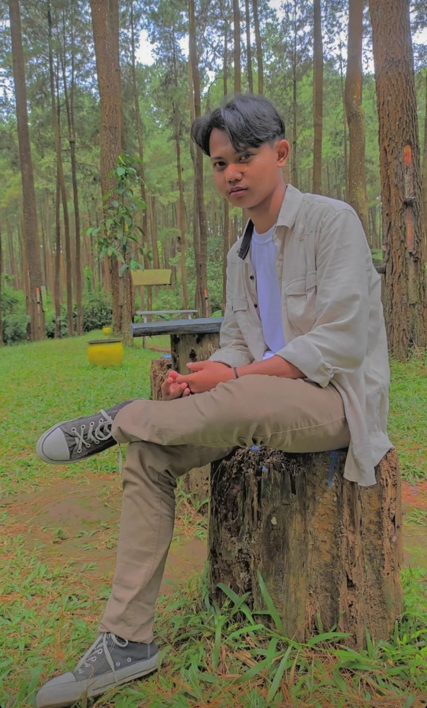

PROFIL PICTURE

Saya adalah anak pertama dari 2 bersaudara.Lahir di Tegal pada hari Kamis Kliwon tanggal 4 Desember 2003 jam 5 subuh.
Mulai sekolah di umur 7 tahun.Dimulai dari SDN Suradadi 02,karena saya mendapat NEM yang lumayan tinggi "26" kemudian saya melanjutkan sekolah di SMPN 03 Kota Tegal,Setelah itu dikarenakan pada saat itu pendaftaran SMA/SMK menggunakan sistem zonasi dan saya NEM saya jelek (haha) akhirnya saya mendaftar di MAN Kota Tegal.
PLURALISME

pluralisme adalah sebuah pemahaman untuk menghargai adanya perbedaan di tengah kehidupan masyarakat sekaligus mengizinkan suatu kelompok berbeda untuk menjaga budaya sebagai bentuk ciri khas mereka.
Bentuk Bentuk Pluralisme :
1.Pluralisme Budaya
Pluralisme Budaya adalah sebuah kondisi budaya yang majemuk. Di mana istilah tersebut dapat digunakan untuk menggambarkan kondisi penerimaan budaya alternatif.
Artinya orang-orang akan mampu hidup secara bersama dengan menerapkan sikap saling toleransi terhadap perbedaan budaya orang lain agar bisa tercapai pluratis.
2.Pluralisme Agama
Pluralisme agama sebenarnya memiliki konsep yang begitu luas, berkaitan dengan penerimaan terhadap agama yang berbeda den digunakan dengan cara yang berbeda.
Pluralisme agama juga bisa meningkatkan jika semua keyakinan itu sama. Karena kebenaran dalam setiap agama adalah relatif.
Karena itu setiap umat beragama tidak boleh mengklaim jika keyakinan yang dianut adalah yang paling benar dan yang lainnya adalah salah. Tak hanya itu saja, pasalnya keberagaman agama dalam masyarakat bisa menjadikan hidup menjadi lebih indah dan memiliki warna.
FAVORITE MUSIC

Neck Deep - December
Pain is never permanent but tonight it's killing me
I hope you get your ball room floor
Your perfect house with rose red doors
I'm the last thing you'd remember
It's been a long lonely December
I wish I'd known that less is more
But I was passed out on the floor
That's the last thing I remember
It's been a long lonely December
Tegal, Jawa Tengah, Indonesia
Phone: 081329552246
Email: yasirrizkii04@gmail.com